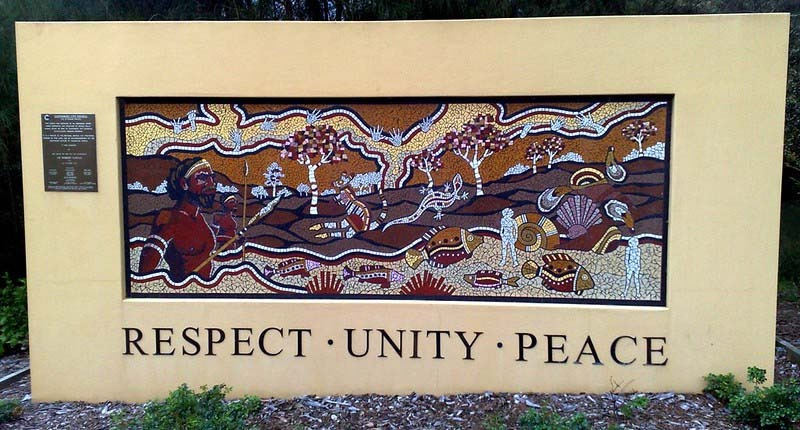

Original Blackboard item · _7400136_1
ACTIVITY: MyReading 4.2
Bennett, 2015
“Stop deploying your white privilege on me!” Aboriginal and Torres Strait Islander engagement with the Australian Association of Social Workers in Australian Social Work
By doing a search of literature on working with different cultures in healthcare, you will find there is a plethora of terms and definitions that can be both confusing and distracting. Many of you may have heard terms such as cultural competence, cultural awareness, cultural humility, cultural sensitivity, and on it goes. We won’t provide you with definitions and details for all these terms. Instead we will simply state that cultural safety is the only framework specifically developed by and for Indigenous Peoples.
The cultural safety framework requires non-Indigenous workers within the healthcare domain to reflect on their own privileges, worldviews, and power imbalances and also how they may decolonise their practices.
The table below compares and contrasts cultural safety with cultural competence, clearly demonstrating the differences. It shows how cultural safety provides a framework that can enable professionals to work with Indigenous clients, hence reducing institutional racism and improvment of service delivery:
Cultural safety | Cultural competence |
|---|---|
|
|
Source: Lokugamage , A. U., Rix, E. F., Fleming, T., Khetan, T., Meredith, A., & Hastie, C. R. (2021). Translating Cultural Safety to the UK. BMJ Journal of Medical Ethics, 1–8. doi:0.1136/medethics-2020-107017

Activity: MyReading 4.3
Jennings et al., 2018. The power of talk and power in talk: a systematic review of Indigenous narratives of culturally safe healthcare communication
Talk has the power to build trust, safety, and engagement
Jennings et al. identify communication (“talk”) as central to Indigenous experiences of culturally safe healthcare. Indigenous narratives consistently describe good talk as fostering trust, strengthening relationships, and supporting engagement with services. Talk that is respectful, relational, and pitched at the client’s level enables Indigenous people to feel heard, valued, and safe within healthcare encounters.
Importantly, talk is not simply the transfer of information. It is a relational practice through which safety is either established or undermined. When healthcare workers listen, use accessible language, and engage respectfully, communication becomes a protective factor that improves access and outcomes.
Good talk is a critical ingredient in culturally safe care because it enables trust, strengthens engagement, and supports positive health experiences.
Complete the readings below:
1. Indigenous Allied Health Australia (IAHA). (2019). Cultural Responsiveness in Action Framework. https://iaha.com.au/workforce-support/training-and-development/cultural-responsiveness-in-action-training/
2. Bennett, B., & Morse, C. (2023). The continuous improvement cultural responsiveness tools (CICRT): creating more culturally responsive social workers.pdf https://www.tandfonline.com/doi/pdf/10.1080/0312407X.2023.2186255 looks at the research behind implementing cultural responsiveness in social work settings.
The link to the actual booklet and other resources supporting this tool is: https://www.bindibennett.com/copy-of-publications-resources
These documents are comprehensive summaries relating to your learning journey so far across Modules 1 to 4. They will help to guide our discussions this week in your tutorial. Please access them and make yourself familiar with the content, making a note of questions you may have regarding any of the content. These are some really valuable resources that can expand your understanding of the core concepts delivered so far in this unit.
On the discussion board write a brief response to this ‘real life scenario’ and the following questions.
An Indigenous Elder from a rural community has been called to a hearing clinic to collect his new hearing aid. When he arrived, the receptionist said to him, in front of a waiting room full of other people: ‘Now Charles, how many hearing aids is this? You can’t keep getting them replaced, so you had better look after this one!’ This one incident caused the Elder to leave the clinic without attending his appointment.
Adapted from: Taylor, K., & Thompson Guerin, P. (2019). Health care and Indigenous Australians: Cultural safety in practice (3rd ed.). South Yarra: Palgrave Macmillan: p.29.